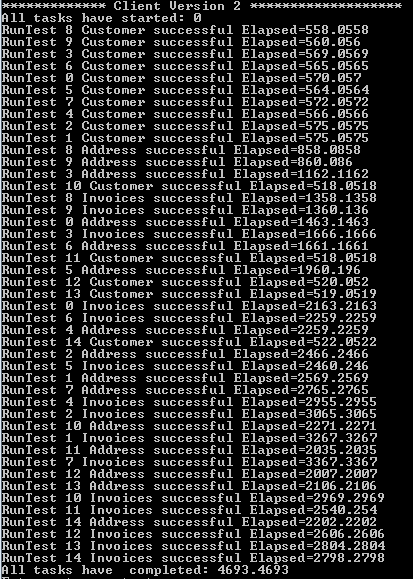

WCF Sample Service with Callbacks (wsdualhttpbinding)
Introduction
This sample project illustrates how performance gains could be accomplished using a WCF service that supports callbacks.
Building the Sample
The sample project consists of two projects: WCFSampleDataService and WCFSampleClient. I found hosting the service in IIS was more reliable than the Visual Studio Development Server but either approach will work. The .Net Framework version
is 4 and no nuget packages were used in this sample.
Note: I hosted the service at http://localhost:8755/DataService.svc in order to explore some of the application pool settings but any location would be suitable for this project.
Scenario
In this sample we have a basic service that provides three operations:
C#
Edit|Remove
csharp
[ServiceContract(Namespace = "uri:wcfsampledataservice:v1", Name = "IDataService")]
public interface IDataService
{
[OperationContract]
Customer GetCustomer(int customerId);
[OperationContract]
CustomerAddress GetCustomerAddress(int customerId);
[OperationContract]
CustomerInvoices GetCustomerInvoices(int customerId);
}
[ServiceContract(Namespace = "uri:wcfsampledataservice:v1", Name = "IDataService")] public interface IDataService { [OperationContract] Customer GetCustomer(int customerId); [OperationContract] CustomerAddress GetCustomerAddress(int customerId); [OperationContract] CustomerInvoices GetCustomerInvoices(int customerId); }
These three operations call downstream services to retrieve customer information. Something to note about these services is the GetCustomerAddress() and GetCustomerInvoices() operations require the Customer object.
For example, this is the implementation of the GetCustomerAddress() operation:
C#
Edit|Remove
csharp
Customer IDataService.GetCustomer(int customerId)
{
return GetCustomer(customerId);
}
Customer IDataService.GetCustomer(int customerId) { return GetCustomer(customerId); }
Note: to keep the service simple, the back-end implementation uses a Thread.Join() to similate a delay. This is shown below in GetCustomer:
C#
Edit|Remove
csharp
private Customer GetCustomer(int customerId)
{
// delay to simulate a downstream web service call
Thread.CurrentThread.Join(100);
return new Customer
{
CustomerId = customerId,
Name = string.Format("Customer '{0}'", customerId)
};
}
private Customer GetCustomer(int customerId) { // delay to simulate a downstream web service call Thread.CurrentThread.Join(100); return new Customer { CustomerId = customerId, Name = string.Format("Customer '{0}'", customerId) }; }
The initial implementation of the service used basic http. As a sample client, I created a simple console application that calls the service multiple times in separate threads. To allow me to handle
Scenario 2 below I introduced a client interface IClient in order to create a generic method that runs a single instance of the client.
C#
Edit|Remove
csharp
static void RunTest<T>(int count) where T : IClient, new()
{
DateTime start = DateTime.Now;
var tasks = new List<Task>();
for (int i = 0; i < count; i++)
{
var task = new Task((customerId) =>
{
T client = new T();
client.RunGetCustomer((int)customerId);
}, i);
task.Start();
tasks.Add(task);
}
Console.WriteLine("All tasks have started: {0}", DateTime.Now.Subtract(start).TotalMilliseconds);
try
{
Task.WaitAll(tasks.ToArray());
}
catch (Exception ex)
{
if(ex.InnerException!=null)
Console.WriteLine("Failed" + ex.InnerException.Message);
else
Console.WriteLine("Failed" + ex.Message);
}
Console.WriteLine("All tasks have completed: {0}", DateTime.Now.Subtract(start).TotalMilliseconds);
}
static void RunTest<T>(int count) where T : IClient, new() { DateTime start = DateTime.Now; var tasks = new List<Task>(); for (int i = 0; i < count; i++) { var task = new Task((customerId) => { T client = new T(); client.RunGetCustomer((int)customerId); }, i); task.Start(); tasks.Add(task); } Console.WriteLine("All tasks have started: {0}", DateTime.Now.Subtract(start).TotalMilliseconds); try { Task.WaitAll(tasks.ToArray()); } catch (Exception ex) { if(ex.InnerException!=null) Console.WriteLine("Failed" + ex.InnerException.Message); else Console.WriteLine("Failed" + ex.Message); } Console.WriteLine("All tasks have completed: {0}", DateTime.Now.Subtract(start).TotalMilliseconds); }
The implementation of the initial client simply calls the three operations in sequence:
C#
Edit|Remove
csharp
class ClientV1 : IClient
{
// when the client is constructed
private DateTime start = DateTime.Now;
public void RunGetCustomer(int customerId)
{
using (var client = new DataServiceClient("basic"))
{
var customer = client.GetCustomer(customerId);
if (Helper.ValidateCustomer(customerId, customer))
Console.WriteLine("RunTest {0} Customer successful Elapsed={1}", customerId, DateTime.Now.Subtract(start).TotalMilliseconds);
else
Console.WriteLine("RunTest {0} Customer failure Elapsed={1} **************", customerId, DateTime.Now.Subtract(start).TotalMilliseconds);
var address = client.GetCustomerAddress(customerId);
if (Helper.ValidateCustomerAddress(customerId, address))
Console.WriteLine("RunTest {0} Address successful Elapsed={1}", customerId, DateTime.Now.Subtract(start).TotalMilliseconds);
else
Console.WriteLine("RunTest {0} Address failure Elapsed={1} **************", customerId, DateTime.Now.Subtract(start).TotalMilliseconds);
var invoices = client.GetCustomerInvoices(customerId);
if (Helper.ValidateCustomerInvoices(customerId, invoices))
Console.WriteLine("RunTest {0} Invoices successful Elapsed={1}", customerId, DateTime.Now.Subtract(start).TotalMilliseconds);
else
Console.WriteLine("RunTest {0} Invoices failure Elapsed={1} **************", customerId, DateTime.Now.Subtract(start).TotalMilliseconds);
}
}
}
class ClientV1 : IClient { // when the client is constructed private DateTime start = DateTime.Now; public void RunGetCustomer(int customerId) { using (var client = new DataServiceClient("basic")) { var customer = client.GetCustomer(customerId); if (Helper.ValidateCustomer(customerId, customer)) Console.WriteLine("RunTest {0} Customer successful Elapsed={1}", customerId, DateTime.Now.Subtract(start).TotalMilliseconds); else Console.WriteLine("RunTest {0} Customer failure Elapsed={1} **************", customerId, DateTime.Now.Subtract(start).TotalMilliseconds); var address = client.GetCustomerAddress(customerId); if (Helper.ValidateCustomerAddress(customerId, address)) Console.WriteLine("RunTest {0} Address successful Elapsed={1}", customerId, DateTime.Now.Subtract(start).TotalMilliseconds); else Console.WriteLine("RunTest {0} Address failure Elapsed={1} **************", customerId, DateTime.Now.Subtract(start).TotalMilliseconds); var invoices = client.GetCustomerInvoices(customerId); if (Helper.ValidateCustomerInvoices(customerId, invoices)) Console.WriteLine("RunTest {0} Invoices successful Elapsed={1}", customerId, DateTime.Now.Subtract(start).TotalMilliseconds); else Console.WriteLine("RunTest {0} Invoices failure Elapsed={1} **************", customerId, DateTime.Now.Subtract(start).TotalMilliseconds); } } }
Running three threads shows an interleaved trace as follows (note the total elapsed time):

Scenario 2
In this scenario, the business has come back and has reported that the performance of the service is just not good enough. After some investigation, it was determined that the back-end services can not be improved. Let's say the back-end is a legacy solution
that is locked down.
One strategy would be to perform the calls asynchronously. That way the basic UI could become available as soon as the GetCustomer() operation completes.
ClientV1a illustrates this approach by launching each operation as a non-blocking task:
C#
Edit|Remove
csharp
class ClientV1a : IClient
{
// when the client is constructed
private DateTime start = DateTime.Now;
public void RunGetCustomer(int customerId)
{
using (var client = new DataServiceClient("basic"))
{
var addressTask = Task.Factory.StartNew(() =>
{
var address = client.GetCustomerAddress(customerId);
});
var invoiceTask = Task.Factory.StartNew(() =>
{
var invoices = client.GetCustomerInvoices(customerId);
});
var customerTask = Task.Factory.StartNew(() =>
{
var customer = client.GetCustomer(customerId); });
customerTask.Wait();
addressTask.Wait();
invoiceTask.Wait();
}
}
}
class ClientV1a : IClient { // when the client is constructed private DateTime start = DateTime.Now; public void RunGetCustomer(int customerId) { using (var client = new DataServiceClient("basic")) { var addressTask = Task.Factory.StartNew(() => { var address = client.GetCustomerAddress(customerId); }); var invoiceTask = Task.Factory.StartNew(() => { var invoices = client.GetCustomerInvoices(customerId); }); var customerTask = Task.Factory.StartNew(() => { var customer = client.GetCustomer(customerId); }); customerTask.Wait(); addressTask.Wait(); invoiceTask.Wait(); } } }
This does show an improvement to the overall performance:

In this scenario, the client can support callbacks. To take advantage of this, the server could pass the result of the GetCustomer() operations to two callback operations. These would then return the results to the client when the operations have completed.
For example:
C#
Edit|Remove
csharp
Customer IDataServiceV2.GetCustomer(int customerId)
{
IDataCallback callback = OperationContext.Current.GetCallbackChannel<IDataCallback>();
Customer customer = GetCustomer(customerId);
t1 = new Task(() =>
{
var address = GetCustomerAddress(customer);
if (callback == null)
Console.WriteLine("DataService.GetCustomer({0}) failed to get Address callback channel!", customerId);
else
callback.OnCustomerAddressComplete(address);
});
t1.Start();
t2 = new Task(() =>
{
var invoices = GetCustomerInvoices(customer);
if (callback == null)
Console.WriteLine("DataService.GetCustomer({0}) failed to get Invoices callback channel!", customerId);
else
callback.OnCustomerInvoicesComplete(invoices);
});
t2.Start();
return customer;
}
Customer IDataServiceV2.GetCustomer(int customerId) { IDataCallback callback = OperationContext.Current.GetCallbackChannel<IDataCallback>(); Customer customer = GetCustomer(customerId); t1 = new Task(() => { var address = GetCustomerAddress(customer); if (callback == null) Console.WriteLine("DataService.GetCustomer({0}) failed to get Address callback channel!", customerId); else callback.OnCustomerAddressComplete(address); }); t1.Start(); t2 = new Task(() => { var invoices = GetCustomerInvoices(customer); if (callback == null) Console.WriteLine("DataService.GetCustomer({0}) failed to get Invoices callback channel!", customerId); else callback.OnCustomerInvoicesComplete(invoices); }); t2.Start(); return customer; }
This way the client is notified when these operations have completed. The following shows an example client callback operation:
C#
Edit|Remove
csharp
public void OnCustomerAddressComplete(CustomerAddress address)
{
if (Helper.ValidateCustomerAddress(CustomerId, address))
Console.WriteLine("RunTest {0} Address successful Elapsed={1}", CustomerId, DateTime.Now.Subtract(start).TotalMilliseconds);
else
Console.WriteLine("RunTest {0} Address failure Elapsed={1} **************", CustomerId, DateTime.Now.Subtract(start).TotalMilliseconds);
CustomerAddress = address;
}
public void OnCustomerAddressComplete(CustomerAddress address) { if (Helper.ValidateCustomerAddress(CustomerId, address)) Console.WriteLine("RunTest {0} Address successful Elapsed={1}", CustomerId, DateTime.Now.Subtract(start).TotalMilliseconds); else Console.WriteLine("RunTest {0} Address failure Elapsed={1} **************", CustomerId, DateTime.Now.Subtract(start).TotalMilliseconds); CustomerAddress = address; }
And we can see an improvement to performance:

Summary
Setting up a callback service was not overly difficult. Gaining confidence in the solution was something different. Most samples deal with broadcasting messges to subscribers and not callbacks targeted toward a specific client. Another approach would have
been to define a set dialog for the client to perform: Register(), Request(), Close(). Where the Close() operation informs the service that the client is no longer interested in callbacks.
Anyway, food for thought. If interested in exploring this further, please start a Q & A.